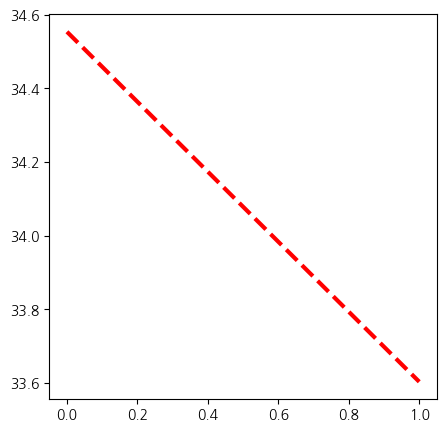
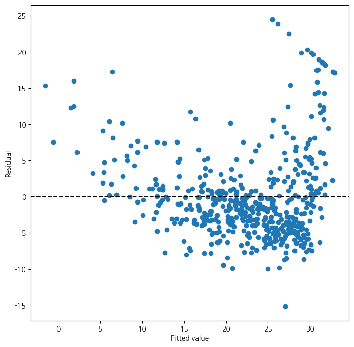
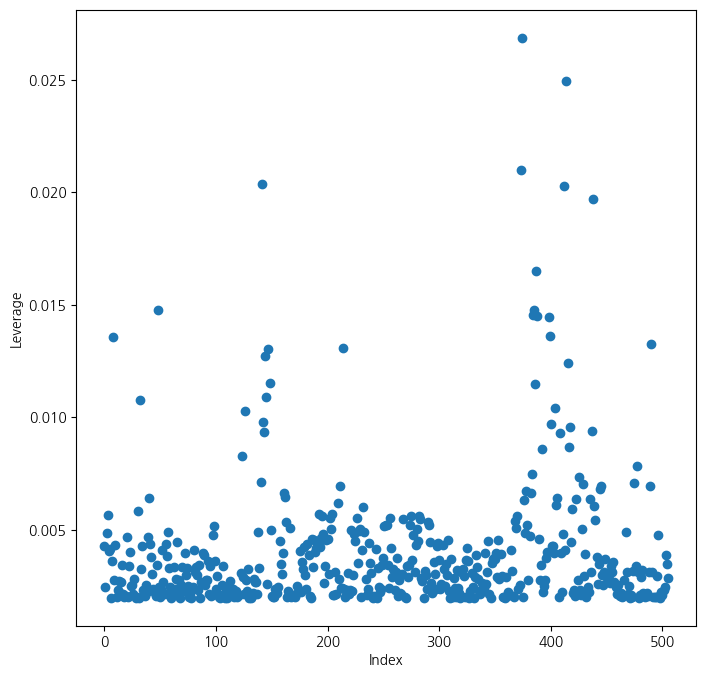
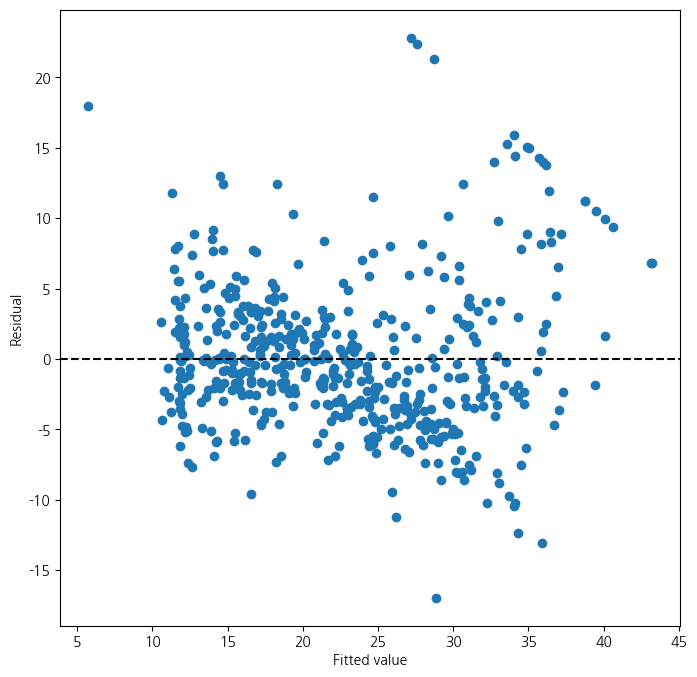
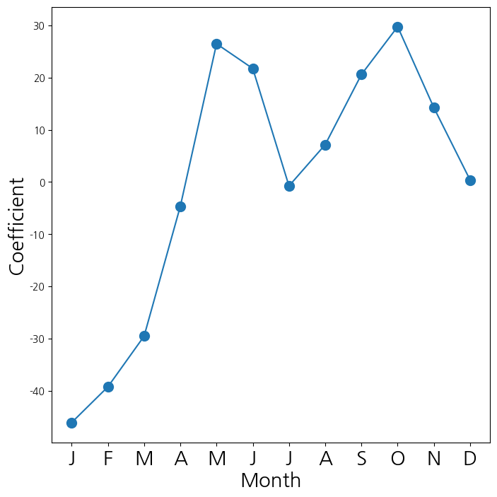
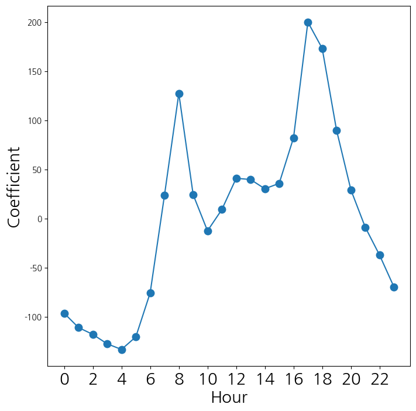

import numpy as np
import pandas as pd
import matplotlib.pyplot as plt
from matplotlib.pyplot import subplots1. imports
import statsmodels.api as sm
from statsmodels.stats.outliers_influence import variance_inflation_factor as VIF
from statsmodels.stats.anova import anova_lmfrom ISLP import load_data2. 단순 선형 회귀 분석
- Boston data 불러오기
- lstat 변수만 사용
- X = [1,
lstat벡터] 형태 - y = medv 변수
from ISLP.models import (ModelSpec as MS, summarize , poly)
from pandas.io.formats.format import DataFrameFormatter
# Inside the pandas/io/formats/html.py file (you'll need to find this file in your pandas installation),
# locate the _get_columns_formatted_values function and modify it as follows:
def _get_columns_formatted_values(self) -> list[str]:
# only reached with non-Multi Index
# return self.columns._format_flat(include_name=False) # Replace this line
formatter = DataFrameFormatter(self.columns, include_name=False) # With this line
return formatter._format_col_name_split()
Boston = load_data("Boston")
print(Boston.columns)
X = pd.DataFrame({'intercept': np.ones(Boston.shape[0]), 'lstat': Boston['lstat']})
print(X[:4])
y = Boston['medv']
print(f'-데이터의 수 : {len(y)}')Index(['crim', 'zn', 'indus', 'chas', 'nox', 'rm', 'age', 'dis', 'rad', 'tax',
'ptratio', 'lstat', 'medv'],
dtype='object')
intercept lstat
0 1.0 4.98
1 1.0 9.14
2 1.0 4.03
3 1.0 2.94
-데이터의 수 : 506- Boston data 단순 선형 회귀 분석
- medv ~ lstat
- \(R^2\) 독립변수가 종속변수를 얼마나 잘 설명하는지 0~1사이
- 독립변수가 늘어날수록 무조건 증가
- adj. \(R^2\) 변수의 수를 고려해 보정 (단순 선형 회귀에서는 거의 같음)
- DF(Degrees of Freedom, 자유도) 1/504
- DF Residuals : 504 \(\to\) 잔차 자유도(관측값 수 - 추정한 모수 수-보통 n-2)
- DF Model : 1 \(\to\) 회귀 자유도(독립변수 수)
- Durbin-Watson(DW 통계량) : 오차들 사이에 자기상관
- 2 근처 : 자기상관 없음(좋음)
- 2보다 작음 : 양의 자기상관
- 2보다 큼 : 음의 자기상관
- Skew : 왜도
- 0 : 완전 대칭
- (> 0) : 오른쪽 꼬리가 길다
- (< 0 ) : 왼쪽 꼬리가 길다
- Kurtosis : 첨도
- 3 : 정규분포
- (> 3) : 뾰족하고 꼬리가 두꺼움
- (< 3) : 평평하고 꼬리가 얇음
- 덜 중요?
- F-statistic : 전체 모델이 통계적으로 유의미한지
- Prob : F값에 따른 p-value
- intercept : 절편
- coef : lstat = 0 일 때 medv가 34.55로 예측된다는 뜻
- std err : 표준오차
- t : t-통계량 \(\to\) 계수가 0인지 아닌지 검정
- P>|t| : p-value \(\to\) 작을수록 유의미한 변수
- [0.025, 0.975] : 95% 신뢰구간
- lstat
- coef : lstat이 1% 증가할 때 medv는 약 0.95감소
- Omnibus : 정규성 검정 \(\to\) 클수록 정규성 위배 가능성 커짐
- Prob(Omnibus) : p-value 0.000 이므로 정규분포 아닐 가능성 큼
- Jarque-Bera : 또다른 정규성 검정 지표
- Log-Likelihood : 모델의 로그 가능도
- AIC / BIC : 모형 간 비교 지표(낮을 수록 좋음)
- Cond. No : 다중공선성 지표(높으면 위험)
model = sm.OLS(y, X)
results = model.fit()
print(results.summary()) OLS Regression Results
==============================================================================
Dep. Variable: medv R-squared: 0.544
Model: OLS Adj. R-squared: 0.543
Method: Least Squares F-statistic: 601.6
Date: Sun, 06 Apr 2025 Prob (F-statistic): 5.08e-88
Time: 09:10:46 Log-Likelihood: -1641.5
No. Observations: 506 AIC: 3287.
Df Residuals: 504 BIC: 3295.
Df Model: 1
Covariance Type: nonrobust
==============================================================================
coef std err t P>|t| [0.025 0.975]
------------------------------------------------------------------------------
intercept 34.5538 0.563 61.415 0.000 33.448 35.659
lstat -0.9500 0.039 -24.528 0.000 -1.026 -0.874
==============================================================================
Omnibus: 137.043 Durbin-Watson: 0.892
Prob(Omnibus): 0.000 Jarque-Bera (JB): 291.373
Skew: 1.453 Prob(JB): 5.36e-64
Kurtosis: 5.319 Cond. No. 29.7
==============================================================================
Notes:
[1] Standard Errors assume that the covariance matrix of the errors is correctly specified.- _X : 아무런 변수 생성 : p-value 0.05보다 작게 나올수도?
- T-test로 변수 선택하는데에는 한계 존재, 변수가 많을 때는 다른 방법
_X =np.random.normal(0,1, size=(len(y), len(y-1)))
_Xarray([[-1.2014418 , -0.36229144, -0.20156353, ..., 0.5128146 ,
-1.69055217, 1.36297382],
[ 1.97238504, -0.22323065, 0.51710176, ..., 0.81227357,
-0.85792917, 0.27368867],
[-0.74635151, -0.2920941 , -0.8552335 , ..., 1.22772083,
-0.07547889, -0.59557387],
...,
[ 0.20602294, 0.13454536, 0.72263167, ..., 0.03738331,
0.49048762, -0.44020111],
[-0.07030914, -0.04136855, 0.16204887, ..., 0.23999928,
1.4415386 , 0.69481763],
[ 0.30221035, -0.50379848, -0.81854603, ..., 0.47187981,
-0.95241703, 0.0196086 ]])- MS 구문 이용해 입력 행렬 처리
design = MS(['lstat'])
design = design.fit(Boston)
X = design.transform(Boston)
print(X[:4])
model = sm.OLS(y, X)
results = model.fit()
print(results.params) intercept lstat
0 1.0 4.98
1 1.0 9.14
2 1.0 4.03
3 1.0 2.94
intercept 34.553841
lstat -0.950049
dtype: float64- 새로운 입력변수 [1 , lstat벡터] 생성, 예측
new_df = pd.DataFrame({'lstat':[5, 10, 15]})
newX = design.transform(new_df)
print(newX)
new_predictions = results.get_prediction(newX);
print(f'평균 : \n{new_predictions.predicted_mean}')
print(f'신뢰구간 : \n{new_predictions.conf_int(alpha=0.05)}')
print(f'예측구간 : \n{new_predictions.conf_int(obs=True, alpha=0.05)}') intercept lstat
0 1.0 5
1 1.0 10
2 1.0 15
평균 :
[29.80359411 25.05334734 20.30310057]
신뢰구간 :
[[29.00741194 30.59977628]
[24.47413202 25.63256267]
[19.73158815 20.87461299]]
예측구간 :
[[17.56567478 42.04151344]
[12.82762635 37.27906833]
[ 8.0777421 32.52845905]]- 평균직선에 대한 그래프 / 잔차에 대한 그래프
import matplotlib.pyplot as plt
def abline(ax, b, m):
xlim = ax.get_xlim()
ylim = [m * xlim[0] + b, m * xlim[1] + b]
ax.plot(xlim, ylim)
def abline(ax, b, m, *args, **kwargs):
xlim = ax.get_xlim()
ylim = [m * xlim[0] + b, m * xlim[1] + b]
ax.plot(xlim, ylim, *args, **kwargs)
ax = subplots(figsize=(5,5))[1]
abline(ax,
results.params[0],
results.params[1], 'r--', linewidth=3)
ax = subplots(figsize=(8,8))[1]
ax.scatter(results.fittedvalues, results.resid)
ax.set_xlabel('Fitted value')
ax.set_ylabel('Residual')
ax.axhline(0, c='k', ls='--');/tmp/ipykernel_147714/1347888005.py:15: FutureWarning: Series.__getitem__ treating keys as positions is deprecated. In a future version, integer keys will always be treated as labels (consistent with DataFrame behavior). To access a value by position, use `ser.iloc[pos]`
results.params[0],
/tmp/ipykernel_147714/1347888005.py:16: FutureWarning: Series.__getitem__ treating keys as positions is deprecated. In a future version, integer keys will always be treated as labels (consistent with DataFrame behavior). To access a value by position, use `ser.iloc[pos]`
results.params[1], 'r--', linewidth=3)

- 잔차 표준화 필요 : 0~1사이 왔다갔다..
- 현재 문제점 : 잔차들이 곡선의 형태를 띄고 있음 \(\to\) 곡선을 표현할 수 있는 변수 사용
- 관측치에 대한 leverage(각 관측치의 영향력) 계산 및 그래프화
- 각 데이터마다 영향의 크기가 다름
infl = results.get_influence()
ax = subplots(figsize=(8,8))[1]
ax.scatter(np.arange(X.shape[0]), infl.hat_matrix_diag)
ax.set_xlabel('Index')
ax.set_ylabel('Leverage')
np.argmax(infl.hat_matrix_diag)374
3. 다중 선형 회귀
- 입력 변수를 lstat + age로 변경
X = MS(['lstat', 'age']).fit_transform(Boston)
model1 = sm.OLS(y, X)
results1 = model1.fit()
print(summarize(results1)) coef std err t P>|t|
intercept 33.2228 0.731 45.458 0.000
lstat -1.0321 0.048 -21.416 0.000
age 0.0345 0.012 2.826 0.005- 입력변수를 mdev를 제외한 모든 변수로 확장
terms = Boston.columns.drop('medv')
terms
X = MS(terms).fit_transform(Boston)
model = sm.OLS(y, X)
results = model.fit()
print(summarize(results)) coef std err t P>|t|
intercept 41.6173 4.936 8.431 0.000
crim -0.1214 0.033 -3.678 0.000
zn 0.0470 0.014 3.384 0.001
indus 0.0135 0.062 0.217 0.829
chas 2.8400 0.870 3.264 0.001
nox -18.7580 3.851 -4.870 0.000
rm 3.6581 0.420 8.705 0.000
age 0.0036 0.013 0.271 0.787
dis -1.4908 0.202 -7.394 0.000
rad 0.2894 0.067 4.325 0.000
tax -0.0127 0.004 -3.337 0.001
ptratio -0.9375 0.132 -7.091 0.000
lstat -0.5520 0.051 -10.897 0.000- p-value가 가장 높은 indus, age 변수 제외
minus_age = Boston.columns.drop(['medv','indus', 'age'])
Xma = MS(minus_age).fit_transform(Boston)
model1 = sm.OLS(y, Xma)
print(summarize(model1.fit())) coef std err t P>|t|
intercept 41.4517 4.903 8.454 0.000
crim -0.1217 0.033 -3.696 0.000
zn 0.0462 0.014 3.378 0.001
chas 2.8719 0.863 3.329 0.001
nox -18.2624 3.565 -5.122 0.000
rm 3.6730 0.409 8.978 0.000
dis -1.5160 0.188 -8.078 0.000
rad 0.2839 0.064 4.440 0.000
tax -0.0123 0.003 -3.608 0.000
ptratio -0.9310 0.130 -7.138 0.000
lstat -0.5465 0.047 -11.519 0.000- 변수 제외하고 중간에서도 전체 요약을 출력해 전체적인 변화를 봐야함
result1 = model1.fit()
#print(result1.summary())- 다중공선성을 확인하기 위한 VIF값
- 값이 크다는 것은 \(R^2\)가 크다는 것
- \(\to\) 자신이 없어도 나머지 변수들의 영향을 많이 받아 설명을 잘한다는 의미
vals = [VIF(X, i) for i in range(1, X.shape[1])]
vif = pd.DataFrame({'vif':vals},index=X.columns[1:])
print(vif) vif
crim 1.767486
zn 2.298459
indus 3.987181
chas 1.071168
nox 4.369093
rm 1.912532
age 3.088232
dis 3.954037
rad 7.445301
tax 9.002158
ptratio 1.797060
lstat 2.870777- 교호작용을 포함한 선형회귀분석
- 교호작용이라는 두 변수 간의 시너지 존재하는 경우!
- 특정 변수가 다른 변수의 영향력에 영향을 준다는 의미
- 변수가 많으면 모든 교호작용 고려 힘듦
- EDA먼저 필요
- lstat과 age간의교호작용
- 결과 :
lstat이 평균을 높여주는 효과가age가 클수록 커짐
X = MS(['lstat', 'age', ('lstat', 'age')]).fit_transform(Boston)
model2 = sm.OLS(y, X)
print(summarize(model2.fit())) coef std err t P>|t|
intercept 36.0885 1.470 24.553 0.000
lstat -1.3921 0.167 -8.313 0.000
age -0.0007 0.020 -0.036 0.971
lstat:age 0.0042 0.002 2.244 0.025- lstat에 대해 다항식 차원을 2까지 늘림
- lstat + lstat\(^2\)
- 만약 5차원이면 lstat + lstat\(^2\) + … + lstat\(^5\)
- 아래에서 2차식까지 통계적 유의성 확인됨
X = MS([poly('lstat', degree=2), 'age']).fit_transform(Boston)
model3 = sm.OLS(y, X)
results3 = model3.fit()
print(summarize(results3)) coef std err t P>|t|
intercept 17.7151 0.781 22.681 0.0
poly(lstat, degree=2)[0] -179.2279 6.733 -26.620 0.0
poly(lstat, degree=2)[1] 72.9908 5.482 13.315 0.0
age 0.0703 0.011 6.471 0.0- result1은 lstat에 대한 선형, result3은 lstat에 대한 2차 다항식
- 아래 검정은 다항식을 2차로 쓰는 것이 유의한지를 검정
- 0,1 둘 다 유의하다는 결과 \(\to\) 그러면 2차식까지 쓰는 것이 맞음
- 큰 모형에서 확실한 효과가 있다는 것이 보여짐
print(anova_lm(results1, results3)) df_resid ssr df_diff ss_diff F Pr(>F)
0 503.0 19168.128609 0.0 NaN NaN NaN
1 502.0 14165.613251 1.0 5002.515357 177.278785 7.468491e-35- results3의 결과에 대한 잔차의 산점도
ax = subplots(figsize=(8,8))[1]
ax.scatter(results3.fittedvalues, results3.resid)
ax.set_xlabel('Fitted value')
ax.set_ylabel('Residual')
ax.axhline(0, c='k', ls='--')
- Carseats data
Sales반응변수- 나머지 전체 +
IncomeAdvertising과PriceAge의 교호작용 추가 - 둘 중에서
Income*advertising만 통계적으로 유의
Carseats = load_data('Carseats')
print(Carseats.columns)
print(Carseats.head())
allvars = list(Carseats.columns.drop('Sales'))
y = Carseats['Sales']
final = allvars + [('Income', 'Advertising'),('Price', 'Age')]
X = MS(final).fit_transform(Carseats)
model = sm.OLS(y, X)
print(model.fit().aic)
print(summarize(model.fit()))Index(['Sales', 'CompPrice', 'Income', 'Advertising', 'Population', 'Price',
'ShelveLoc', 'Age', 'Education', 'Urban', 'US'],
dtype='object')
Sales CompPrice Income Advertising Population Price ShelveLoc Age \
0 9.50 138 73 11 276 120 Bad 42
1 11.22 111 48 16 260 83 Good 65
2 10.06 113 35 10 269 80 Medium 59
3 7.40 117 100 4 466 97 Medium 55
4 4.15 141 64 3 340 128 Bad 38
Education Urban US
0 17 Yes Yes
1 10 Yes Yes
2 12 Yes Yes
3 14 Yes Yes
4 13 Yes No
1157.337779308029
coef std err t P>|t|
intercept 6.5756 1.009 6.519 0.000
CompPrice 0.0929 0.004 22.567 0.000
Income 0.0109 0.003 4.183 0.000
Advertising 0.0702 0.023 3.107 0.002
Population 0.0002 0.000 0.433 0.665
Price -0.1008 0.007 -13.549 0.000
ShelveLoc[Good] 4.8487 0.153 31.724 0.000
ShelveLoc[Medium] 1.9533 0.126 15.531 0.000
Age -0.0579 0.016 -3.633 0.000
Education -0.0209 0.020 -1.063 0.288
Urban[Yes] 0.1402 0.112 1.247 0.213
US[Yes] -0.1576 0.149 -1.058 0.291
Income:Advertising 0.0008 0.000 2.698 0.007
Price:Age 0.0001 0.000 0.801 0.4244. 가변수 사용법
from ISLP.models import contrast
Bike = load_data('Bikeshare')
Bike.shape, Bike.columns((8645, 15),
Index(['season', 'mnth', 'day', 'hr', 'holiday', 'weekday', 'workingday',
'weathersit', 'temp', 'atemp', 'hum', 'windspeed', 'casual',
'registered', 'bikers'],
dtype='object'))X2 = MS(['mnth', 'hr', 'workingday','temp', 'weathersit']).fit_transform(Bike)
Y = Bike['bikers']
M1_lm = sm.OLS(Y, X2).fit()
S2 = summarize(M1_lm)
print(S2) coef std err t P>|t|
intercept -68.6317 5.307 -12.932 0.000
mnth[Feb] 6.8452 4.287 1.597 0.110
mnth[March] 16.5514 4.301 3.848 0.000
mnth[April] 41.4249 4.972 8.331 0.000
mnth[May] 72.5571 5.641 12.862 0.000
mnth[June] 67.8187 6.544 10.364 0.000
mnth[July] 45.3245 7.081 6.401 0.000
mnth[Aug] 53.2430 6.640 8.019 0.000
mnth[Sept] 66.6783 5.925 11.254 0.000
mnth[Oct] 75.8343 4.950 15.319 0.000
mnth[Nov] 60.3100 4.610 13.083 0.000
mnth[Dec] 46.4577 4.271 10.878 0.000
hr[1] -14.5793 5.699 -2.558 0.011
hr[2] -21.5791 5.733 -3.764 0.000
hr[3] -31.1408 5.778 -5.389 0.000
hr[4] -36.9075 5.802 -6.361 0.000
hr[5] -24.1355 5.737 -4.207 0.000
hr[6] 20.5997 5.704 3.612 0.000
hr[7] 120.0931 5.693 21.095 0.000
hr[8] 223.6619 5.690 39.310 0.000
hr[9] 120.5819 5.693 21.182 0.000
hr[10] 83.8013 5.705 14.689 0.000
hr[11] 105.4234 5.722 18.424 0.000
hr[12] 137.2837 5.740 23.916 0.000
hr[13] 136.0359 5.760 23.617 0.000
hr[14] 126.6361 5.776 21.923 0.000
hr[15] 132.0865 5.780 22.852 0.000
hr[16] 178.5206 5.772 30.927 0.000
hr[17] 296.2670 5.749 51.537 0.000
hr[18] 269.4409 5.736 46.976 0.000
hr[19] 186.2558 5.714 32.596 0.000
hr[20] 125.5492 5.704 22.012 0.000
hr[21] 87.5537 5.693 15.378 0.000
hr[22] 59.1226 5.689 10.392 0.000
hr[23] 26.8376 5.688 4.719 0.000
workingday 1.2696 1.784 0.711 0.477
temp 157.2094 10.261 15.321 0.000
weathersit[cloudy/misty] -12.8903 1.964 -6.562 0.000
weathersit[heavy rain/snow] -109.7446 76.667 -1.431 0.152
weathersit[light rain/snow] -66.4944 2.965 -22.425 0.000- contrast : 범주형 변수에 대한 코딩방식 지정
sum은 범주혀 변수의 모든 계수의 합이 0이 되도록 제약- 그러면 마지막 범주는 계수 추정되지 않고 나머지 계수들의 합의 음수가 됨
- 결과가 0에 가까움 \(\to\) 거의 차이가 없음, 예측력 자체는 인코딩 방식에 거의 영향을 받지 않음
hr_encode = contrast('hr', 'sum') # 합에 대한 제약을 검
mnth_encode = contrast('mnth', 'sum') # 합에 대한 제약을 검
X2 = MS([mnth_encode, hr_encode, 'workingday','temp', 'weathersit']).fit_transform(Bike)
Y = Bike['bikers']
M2_lm = sm.OLS(Y, X2).fit()
S2 = summarize(M2_lm)
print(S2)
np.sum((M1_lm.fittedvalues - M2_lm.fittedvalues)**2) coef std err t P>|t|
intercept 73.5974 5.132 14.340 0.000
mnth[Jan] -46.0871 4.085 -11.281 0.000
mnth[Feb] -39.2419 3.539 -11.088 0.000
mnth[March] -29.5357 3.155 -9.361 0.000
mnth[April] -4.6622 2.741 -1.701 0.089
mnth[May] 26.4700 2.851 9.285 0.000
mnth[June] 21.7317 3.465 6.272 0.000
mnth[July] -0.7626 3.908 -0.195 0.845
mnth[Aug] 7.1560 3.535 2.024 0.043
mnth[Sept] 20.5912 3.046 6.761 0.000
mnth[Oct] 29.7472 2.700 11.019 0.000
mnth[Nov] 14.2229 2.860 4.972 0.000
hr[0] -96.1420 3.955 -24.307 0.000
hr[1] -110.7213 3.966 -27.916 0.000
hr[2] -117.7212 4.016 -29.310 0.000
hr[3] -127.2828 4.081 -31.191 0.000
hr[4] -133.0495 4.117 -32.319 0.000
hr[5] -120.2775 4.037 -29.794 0.000
hr[6] -75.5424 3.992 -18.925 0.000
hr[7] 23.9511 3.969 6.035 0.000
hr[8] 127.5199 3.950 32.284 0.000
hr[9] 24.4399 3.936 6.209 0.000
hr[10] -12.3407 3.936 -3.135 0.002
hr[11] 9.2814 3.945 2.353 0.019
hr[12] 41.1417 3.957 10.397 0.000
hr[13] 39.8939 3.975 10.036 0.000
hr[14] 30.4940 3.991 7.641 0.000
hr[15] 35.9445 3.995 8.998 0.000
hr[16] 82.3786 3.988 20.655 0.000
hr[17] 200.1249 3.964 50.488 0.000
hr[18] 173.2989 3.956 43.806 0.000
hr[19] 90.1138 3.940 22.872 0.000
hr[20] 29.4071 3.936 7.471 0.000
hr[21] -8.5883 3.933 -2.184 0.029
hr[22] -37.0194 3.934 -9.409 0.000
workingday 1.2696 1.784 0.711 0.477
temp 157.2094 10.261 15.321 0.000
weathersit[cloudy/misty] -12.8903 1.964 -6.562 0.000
weathersit[heavy rain/snow] -109.7446 76.667 -1.431 0.152
weathersit[light rain/snow] -66.4944 2.965 -22.425 0.0001.6273003592224878e-19- 제약조건이 걸린 계수 확인
- 위의 계수들의 합에 음수를 취해 마지막 계수 생성
coef_month = S2[S2.index.str.contains('mnth')]['coef']
print(coef_month)
months = Bike['mnth'].dtype.categories
coef_month = pd.concat([coef_month, pd.Series([-coef_month.sum()], index=['mnth[Dec]'])
])
print(coef_month)mnth[Jan] -46.0871
mnth[Feb] -39.2419
mnth[March] -29.5357
mnth[April] -4.6622
mnth[May] 26.4700
mnth[June] 21.7317
mnth[July] -0.7626
mnth[Aug] 7.1560
mnth[Sept] 20.5912
mnth[Oct] 29.7472
mnth[Nov] 14.2229
Name: coef, dtype: float64
mnth[Jan] -46.0871
mnth[Feb] -39.2419
mnth[March] -29.5357
mnth[April] -4.6622
mnth[May] 26.4700
mnth[June] 21.7317
mnth[July] -0.7626
mnth[Aug] 7.1560
mnth[Sept] 20.5912
mnth[Oct] 29.7472
mnth[Nov] 14.2229
mnth[Dec] 0.3705
dtype: float64- 월에 대응되는 계수들을 선도표로 연결해서 시각화
- 겨울에는 잘 안타는 듯
- 여름에도 조금 떨어지는 경향을 보임
fig_month , ax_month = subplots(figsize=(8,8))
x_month = np.arange(coef_month.shape[0])
ax_month.plot(x_month , coef_month , marker='o', ms=10)
ax_month.set_xticks(x_month)
ax_month.set_xticklabels([l[5] for l in coef_month.index], fontsize
=20)
ax_month.set_xlabel('Month', fontsize=20)
ax_month.set_ylabel('Coefficient', fontsize=20);
- 시간에 대응되는 계수들을 선도표로 연겨해서 시각화
coef_hr = S2[S2.index.str.contains('hr')]['coef']
coef_hr = coef_hr.reindex(['hr[{0}]'.format(h) for h in range(23)])
coef_hr = pd.concat([coef_hr, pd.Series([-coef_hr.sum()], index=['hr[23]'])
])
fig_hr , ax_hr = subplots(figsize=(8,8))
x_hr = np.arange(coef_hr.shape[0])
ax_hr.plot(x_hr , coef_hr , marker='o', ms=9)
ax_hr.set_xticks(x_hr[::2])
ax_hr.set_xticklabels(range(24)[::2], fontsize =20)
ax_hr.set_xlabel('Hour', fontsize=20)
ax_hr.set_ylabel('Coefficient', fontsize=20);